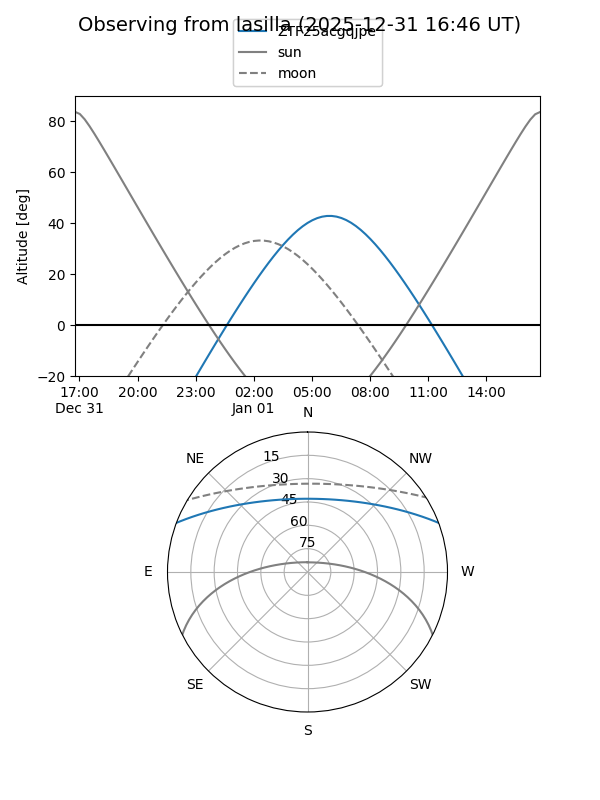
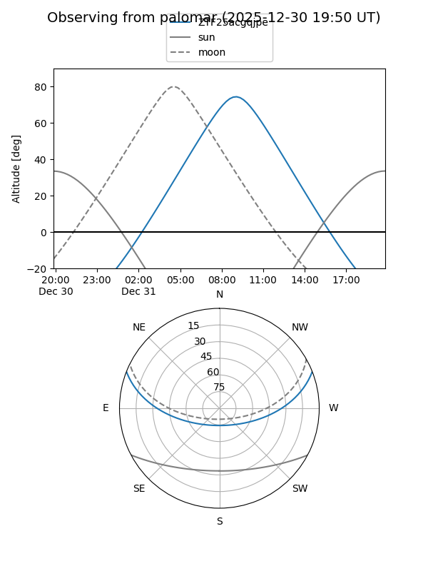

ZTF25acgqjpe
Target ZTF25acgqjpe at 2025-12-31 16:59
Aliases and brokers:
FINK:
Lasair:
ALeRCE:
alt names
ZTF25acgqjpe (ztf,fink_ztf)
Coordinates:
equatorial (ra, dec) = 118.3249,+17.90302
equatorial (HMS+DMS) = 07:53:17.99,+17:54:10.89
galactic (l, b) = (203.1641,+21.46932)
Flags:
Photometry:
last ztfg=19.58
1 ztfg detections
Lightcurve

Visibility


Additional plots